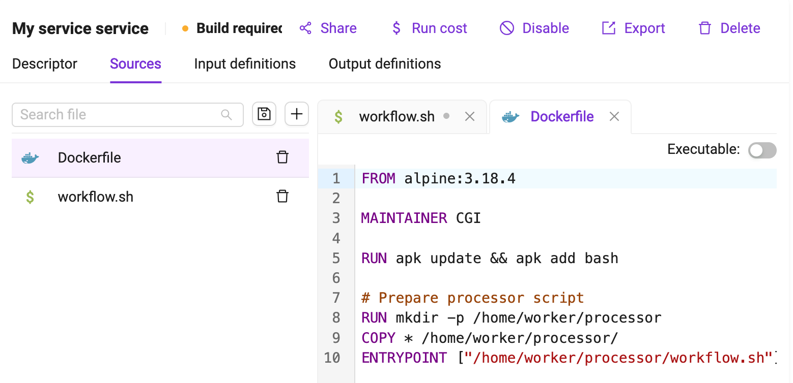
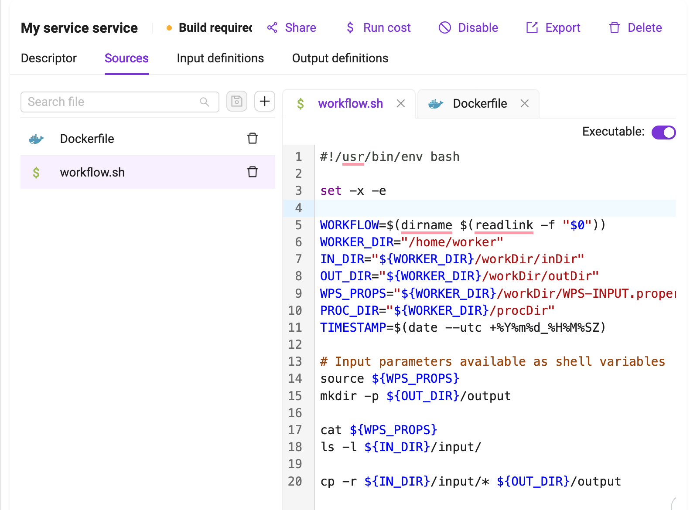
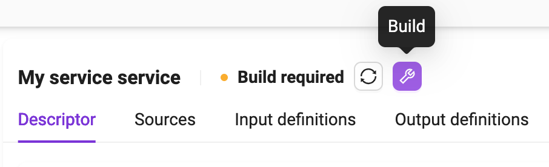
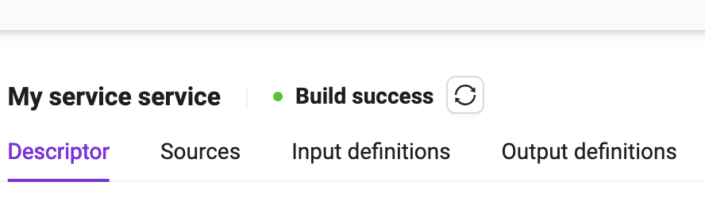

Integrate your own algorithm
Insula Intellect allows you to seamlessly integrate your own algorithm. Generally speaking, it is possible to integrate any program running on Linux. Once integrated, an algorithm becomes a service. This section explains the steps to achieve this result.
Prerequisites
The feature is only available to users with role Expert User.
Accessing the feature
Visit <base_url>/intellect.
Click on Integrate your own algorithm.
Identify the card Processing services and click on it.
{kind=link}
Creating a new service
Insula Intellect packages the algorithms and their dependencies (e.g., libraries, executable, etc.) as Docker images and execute them within Docker containers.
To proceed:
Click on the ‘+’ button.
Select the Service Template (see Descriptor for details).
As a start, select Processor, then Empty.
Provide the Name, that is the service name
It has to start with a letter, and only contain letters and numbers. No spaces or special characters allowed.
Provide the Title. This can be used to give a user friendly name to the service.
Provide the Description. That is a natural language description of the service.
Type the Provider. This is useful to identify the entity or person providing the service.
Type the Version.
It is suggested to use semantic versioning.
Click on the OK button
TIP: The button is located at the bottom of the page. If it not visible, try to use the tab key.
See a screen similar to:
As a next step, let’s define the service specification.
Service Specification
The service specification is composed of several tab:
The Descriptor tab describe properties of the service, including its name, title, description, version, service type, and resources.
The Sources tab allows the creation of the files that compose the service.
The Input definitions tab is used for the specification of the service inputs.
The Output definitions tab is used for the specification of the service outputs.
Descriptor
In the top fields, the service metadata (name, title, description) plus the additional version field can be edited.
The Docker tag that is associated to the service is immutably generated on service creation.
The Service type field can be used to change the service type. The possible values are:
Processor: A processor is an algorithm that is executed without user intervention. Processors start with a user specified entry point script and terminate when this script terminates. The execution of a processor will trigger the creation of a processing job.
Parallel Processor: A parallel processor is able to trigger more instances of the processor based on an input with a multiplicity higher than 1 (e.g., a databasket or a list of input files). The execution of a parallel processor triggers the creation of a parent job and as many child job as the number of inputs provided for the execution. The parallel processor must identify a specific input parameter that will receive the different instances of the multiple input. The other input parameters will be passed unchanged to all the processing job generated. More on this in section.
Application: An application is a service that requires user interaction. This kind of service is typically used to provide a service with a GUI or Web UI. The service execution is not bound to terminate when the end of its entry point is reached.
FTP harvester. Not used and it will be deprecated soon.
WPS service. Not used and it will be deprecated soon.
The Required resources section provides a way to define the amount of Storage, CPU, Memory and GPU a single job should use.
Sources
Through the Sources tab, users can create the different files that compose the processing service. A minimum of two mandatory files must be specified:
A Dockerfile is a text document that contains all the commands a user could call on the command line to assemble an image.
An entrypoint, referenced in the Dockerfile through the ENTRYPOINT instruction, defines where the execution of the container starts at runtime. A default Bash entrypoint called workflow.sh is provided by the platform as a template when the processor is created. The user is free to change the entrypoint with any other script.
A code editor provides a way for the user to create the content of the file supported by a syntax highlighting feature for his language of choice.
If the file to be created is supposed to be executable, the Executable checkbox should be ticked.
The interface supports the specification of text files. Any binary file should instead be managed through the Dockerfile, e.g. by installing or downloading binary files available at external sites.
 {kind=link}
{kind=link}
Input definitions
Through the input definition tab, the user specifies how the service will expose its input and interact with Insula Intellect to get them.
For each input managed by the service, the user has to enter a definition that includes:
The input id, a string used to identify the input inside the service.
The input title, a human readable name for this input.
The input description, a longer natural text description of this input , used on the workspace panel.
- The input type, which can be:
A literal value, i.e. a string, number or enum.
A complex value, i.e. a catalog product, an AOI, a date.
The input default value, used when no value is provided by users when the service is launched
If the input is required.
{kind=link}
Behaviour for inputs
Insula Intellect will behave as follows with respect to service inputs:
Any number, date, AOI or simple string that is expected by a service will be delivered to its container in the form of a file (
/home/worker/workDir/FSTEP-WPS-INPUT.properties) containing a line for each input in the formID=VALUE.
Example
The user defines an input with rounding of type number. A user invokes this service passing as arguments the value 0.5. Insula Intellect will create inside the container the file /home/worker/workDir/FSTEP-WPS-INPUT.properties with the following content:
rounding=0.5
By reading this file, the service can then use the provided value as part of its computation. In a Bash script, this file will typically be read with the source command so that after the execution of that command all the input IDs and values will be available as environment variables.
For any Catalog product, Insula Intellect will place the resource content in a subfolder of
/home/worker/workDir/inDirhaving the input ID as name.
Example
The user defines an input with ID s2tile of type Catalogue product. A user invokes this service passing as arguments the value:
desp:///S2A_MSIL1C_20180312T124041_N0206_R052_T26SNE_20180312T125451.SAFE
The platform will put the Sentinel-2 product corresponding to the above URI in the following folder within the Docker container:
/home/worker/workDir/inDir/s2tile
To designate an input parameter as the one that will receive the different input files in a parallel processing, its ID must be named
parallelInputs. Inside the processor, this special field must be referenced through the ID input.
Example
The user defines an input with ID parallelInputs of type Catalogue product. A user invokes this service passing as arguments a data basket.
The platform will create n jobs, each one with an item from a databasket that will be available in the following folder of the container:
/home/worker/workDir/inDir/input
Output definitions
The output definition tab defines how the service will interact with the Insula Intellect for the service outputs.
For each output managed by the service, the user has to enter a definition that includes:
The output id, a string used to identify the output inside the service.
The output title, a human readable name for this output.
The output description, a longer natural text description of this output
- The output format, which can be:
A GeoTIFF. In this case the output will be considered for visualisation during the output publishing phase.
A Shapefile. In this case the output will be considered for visualisation during the output publishing phase.
Any other format.
The output default value, used when no value is provided by service for that output.
The output time regular expression, used by the platform to extract output timestamp metadata from the output file name, including start and/or end timestamps of the output product.
The output Geoserver layer style, which should be existing already. This is only applicable to formats GeoTIFF and Shapefile.
{kind=link}
Time Regular Expression
The time regular expression describes how the timestamps should be extracted from the file name. There are 2 options:
ISO8601
Custom
The ISO8601 seeks in the output names a format compatible with the ISO 8601 standard.
The custom option leverages named groups in the regexp. The supported named groups are:
?<start> for a group that represents the product start date
?<end> for a group that representes the product end date
?<startEnd> for a group that represents both the product start and end date.
The supported date and time format is “yyyyMMdd[[ ][‘T’]HHmm[ss][.SSS][XXX]]” which can be interpreted as:
A mandatory year/month/day date with four digits for year, two for month and two for day followed by an optional time composed of
An optional space followed by
An Optional T symbol followed by
Mandatory Hour and minutes fields followed by
Optional seconds specification followed by
Optional milliseconds specification followed by
Optional Timezone.
If not time is specified, Midnight UTC is assumed.
If no time zone is specified, UTC is assumed.
Example
An NDVI service produces files that observe the convention S2_NDVI_yyyyMMdd.tif, where there is a single timestamp representing the product start and end time.
The user should add a Time Regexp expression of the form:
"S2_NDVI_(?<startEnd>\d{8}).tif"
so that the Insula Intellect will be able to extract from the file name and parse the corresponding timestamp (in this case, a date without a time) to represent the product start and end time.
Example
A change detection service produces files that observer the convention S2_CHD_yyyyyMMddThhmm_yyyyyMMddThhmm.tif, where the first block represents the time of the first image and the second block represents the time of the second more recent image.
The developer should add a Time Regexp expression of the form:
"S2_CHD_(?<start>\d{8}T\d{4})_(?<end>\d{8}T\d{4}).tif"
so that Insula Intellect will be able to extract from the file name and parse the two corresponding timestamps (in this case, dates with a time) to represent the product start and end time.
Behaviour for outputs
Insula Intellect will behave as follows with respect to service outputs:
If a folder with the same name as an output id is defined inside the
/home/worker/workDir/outDirfolder, the content of that folder is saved as the service output for that id.If a file inside the folder is of a type supported for the visualisation, the geometry information is also extracted are saved as part of the output metadata. Currently, the supported file type are GeoTIFF and Shapefile.
If a time regular expression is defined for that output, the start and/or end timestamps are extracted from the file name and saved as part of the output metadata.
Building the image
At the end of the service specification process, it is necessary to build the Docker image that will be used to launch the service as a Docker container.
At the top of the form, the string “Build required” means that that the step is necessary (e.g., after service creation or modification).
{kind=link}
Click on the Build button to start the process and wait for its completion. Depending on the amount and size of dependencies declared in the Dockerfile, this process can take several minutes. At the end of the process, it should look like the following image, and the service is ready to run (see Running a service).
{kind=link}
Integration hints
Cloud Optimized GeoTIFF (COG)
In order to ensure proper performance in visualization we recommend to execute the following lines of GDAL code to all raster data which your service generates as output files and that may be ingested into GeoServer or used in any other visualization or direct data access tool:
gdaladdo -r average $PROC_DIR/input.tif
gdal_translate $PROC_DIR/input.tif $OUT_DIR/cog/cog.tif -co TILED=YES -co COMPRESS=JPEG -co COPY_SRC_OVERVIEWS=YES
Extra: Service templates
Service Templates are partial specification of services that can be used as blueprints to create new services. Using the Service templates button in the left sidebar, users can start defining their own service templates.
In order to create the service template, the following information must be provided:
Service Type. The type of service template to be created (see Descriptor for details)
Name. The service template name. It has to start with a letter, and only contain letters and numbers. No spaces or special characters allowed.
Title. This can be used to give a user friendly name to the service template
Description. Here the developer can provide a longer, natural language description of the service template.
Provider. This is useful to identify the entity or person providing the service.
Version. This is useful to version the service.
On the next screen, the user can start defining the service template specification.
Service templates specification
A service template specification is a partial version of a service specification. It includes the following subset of elements from service specification
The Descriptor describe properties of the service (including its name, title, description, version and service type).
The Sources tab allows the creation of the files that compose the service.
The Input definitions tab is used for the specification of the service inputs.
The Output definitions tab is used for the specification of the service outputs.
Refer to the Service Specification section for a description of these elements.